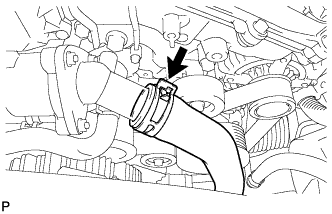
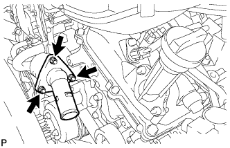

ТЕРМОСТАТ > СНЯТИЕ |
| 1. СНИМИТЕ ВЕРХНЕЕ УПЛОТНЕНИЕ КРОНШТЕЙНА РАДИАТОРА |
Освободите 13 фиксаторов и снимите верхнее уплотнение кронштейна радиатора.
| 2. СНИМИТЕ НИЖНЮЮ НАКЛАДКУ ПЕРЕДНЕГО БАМПЕРА |
Освободите фиксатор, выверните 5 болтов и снимите нижнюю облицовку переднего бампера.
| 3. СНИМИТЕ ЗАЩИТУ КАРТЕРА ДВИГАТЕЛЯ № 1 В СБОРЕ |
Выверните 4 болта.
 |
Отсоедините защиту картера двигателя от кузова автомобиля, как показано на рисунке.
| 4. СЛЕЙТЕ ОХЛАЖДАЮЩУЮ ЖИДКОСТЬ ДВИГАТЕЛЯ |

| *1 | Пробка расширительного бачка | *2 | Пробка радиатора |
| *3 | Пробка сливного крана радиатора | *4 | Пробка сливного крана блока цилиндров |
Ослабьте пробку сливного крана радиатора.
Снимите пробку радиатора и слейте охлаждающую жидкость.
Ослабьте 2 пробки сливных кранов блока цилиндров и слейте охлаждающую жидкость из двигателя.
| 5. СНИМИТЕ ДЕКОРАТИВНУЮ КРЫШКУ V-ОБРАЗНОГО ДВИГАТЕЛЯ |
 |
Поднимите переднюю часть декоративной крышки V-образного двигателя, чтобы открепить 2 штифта. Затем снимите 2 крюка декоративной крышки V-образного двигателя с кронштейна, чтобы снять декоративную крышку V-образного двигателя.
| *1 | Штифт |
| *2 | Крюк |
| 6. ОТСОЕДИНИТЕ ШЛАНГ РАДИАТОРА № 2 |
|  |
Отсоедините шланг радиатора № 2.
| 7. СНИМИТЕ ВПУСКНОЙ ПАТРУБОК ОХЛАЖДАЮЩЕЙ ЖИДКОСТИ С ТЕРМОСТАТОМ |
|  |
Отверните 3 гайки и снимите приемник охлаждающей жидкости, термостат и прокладку.